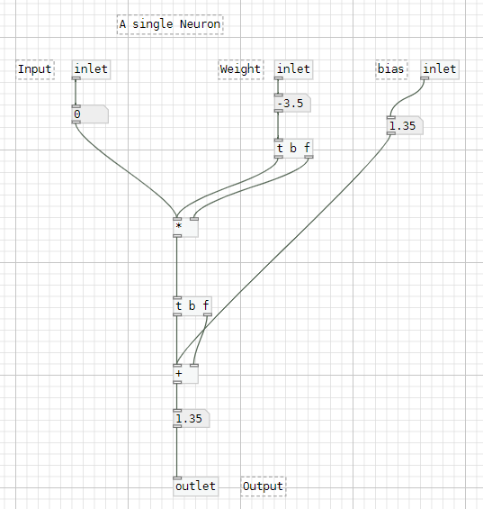

Introduction
I was curious to see if I could build a neural network in Purr-Data, so I built a pd patch which implements a simple feedforward neural network with two hidden layers, where you can set the input values and observe the output. It also includes some visualization components. However, it does not include any training functionality (which I plan to do in the future with backpropogation and optimization), for now, the weights and biases need to be pre-determined or set manually.
Breakdown of the patch
- Input Layer: The input to the neural network is represented by the floatatom objects with labels like "weight" and "bias" in the top part of the patch. These objects allow you to set the input values.
- Hidden Layers: The patch contains two hidden layers, each composed of multiple "neuron" subpatches. Each "neuron" subpatch performs a weighted sum of its inputs (the input and the weight), adds a bias term, and then passes the result through a ReLU (Rectified Linear Unit) activation function.
- Output Layer: The final outputs of the two hidden layers are summed together using the expr object to produce the overall output of the neural network, which is displayed in the floatatom object labeled "output".
- Visualization: I've also used GEM for visualizing the outputs of the network.
- Weight and Bias Initialization: The patch includes several messages (e.g., 6, 0, -1, 0.7) that initialize the weights and biases of the neurons in the hidden layers when the patch is loaded.
- Training and Inference: While this patch is set up for inference (i.e., making predictions with a pre-trained model), it does not include any explicit mechanism for training the neural network. Training would typically involve adjusting the weights and biases based on input-output examples and a chosen optimization algorithm.
- Function to fit: The sine curve, represented by the equation y = sin(2πx), which is a periodic function that oscillates between -1 and 1.
The Patch
Neuron Subpatch
The Complete Network

Visualizing using GEM

The Green curve is the y = sin(2πx) curve and the Red curve is the neural network trying to fit the Green one.
Download the patch source (with GEM visualization) here
The Future
In summary, this patch implements a simple feedforward neural network with two hidden layers. However, the weights and biases need to set manually.
There's still a lot to explore. I'd love to expand the neural network to perform backpropocation and optimization once I figure out how to work with csv files in purr-data.